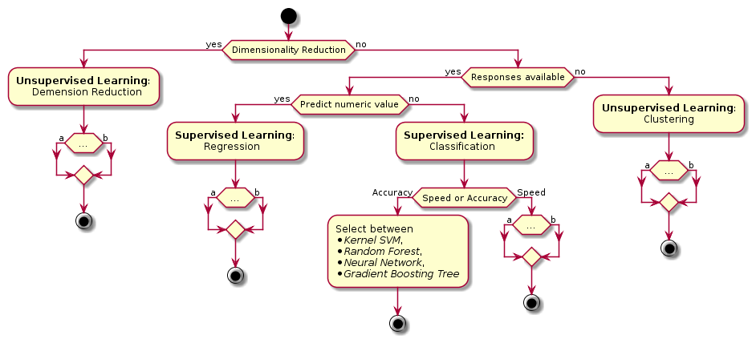

Reinventing Project Selection in the Swiss Procurement Process
Alex Kräuchi & Jan Dietrich
17. Dezember 2018
Stats
| invitations to tender |
9’000 |
| awards |
7’500 |
| value of awards (CHF) |
14’000’000’000 |
1
CPV Code

- 45000000 - Bauarbeiten
- 45300000 - Bauinstallationsarbeiten
- 45310000 - Installateurarbeiten
Aim
- Imitate and possibly improve the current process by automating it
- Use a data driven approach
- Business value: Reduce Effort, get better results
Data presentation
FDN Simap Database
| tender |
61’703 |
| awards |
47’958 |
| bidder* |
10’237 |
| contractor* |
2’794 |
* unique: grouped by institution
1
Machine learning
- “Machine learning is a method of data analysis that automates analytical model building.” 2
- “[…] idea that systems can learn from data, identify patterns and make decisions with minimal human intervention.” 2
- Supervised & Unsupervised Learning
Algorithm Choice
- “No Free Lunch” theorem 3

4
Decision Tree

5
Random Forest

6
Success Metrics

7
Model generation process
iterative process ⭮
- select and prepare attributes
- train model
- model evaluation
- To test:
- Tenders from similar domains
- Bidders with small set of positive responses